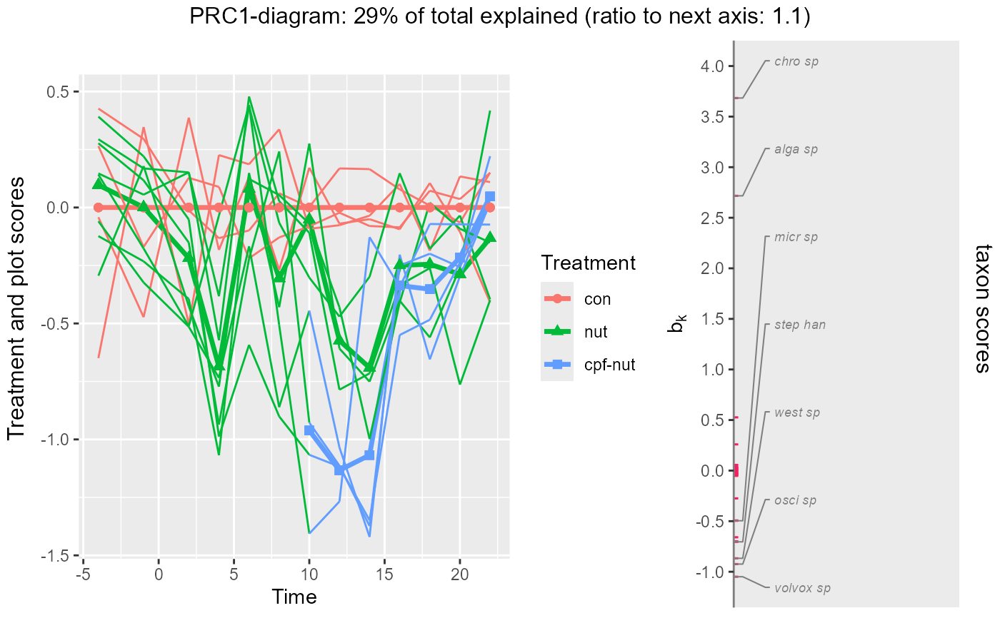
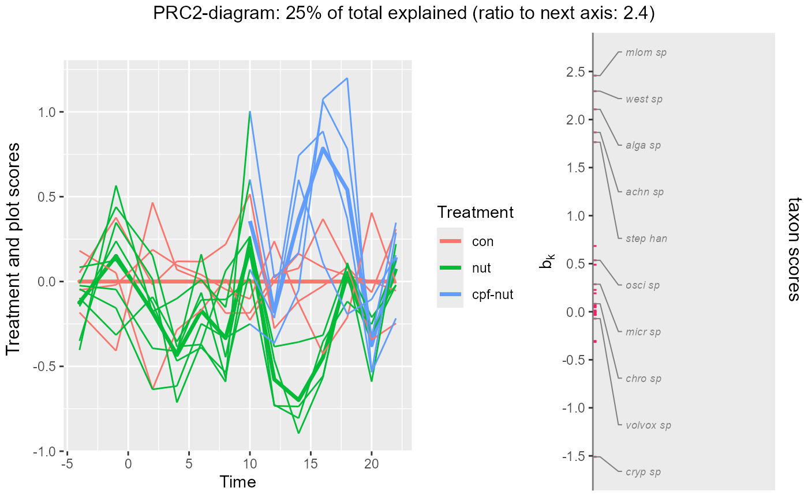
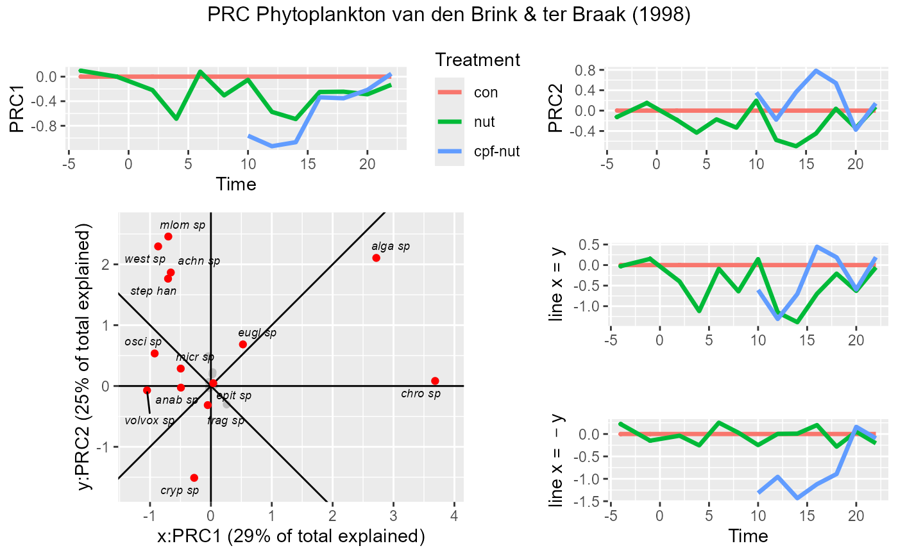
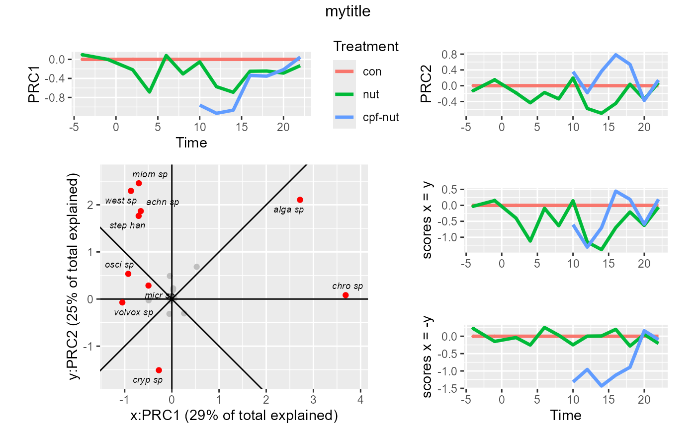

plotPRC2d creates a two-dimensional PRC diagram with species loadings from a result of doPRC or PRC_scores
plotPRC2d(
object,
treatment = NULL,
condition = NULL,
plot = 1,
xvals = NULL,
axes = c(1, 2),
threshold = 7,
title = NULL,
left = NULL,
right = NULL,
speciesname = NULL,
selectname = "Fratio",
xylab = NULL,
label.repel = FALSE,
withnames_only = FALSE,
max.overlaps = 10,
mult_expand = 0.1,
widths = c(3, 2),
verbose = TRUE
)a result of doPRC or PRC_scores or a list with element
PRCplus (a data frame with a variables to plot, see details).
character vector of names of factors in object$PRCplus,
the first two of which set the color and linetype of treatments.
Default: derived from object$'focal_and_conditioning_factors'.
character vector of names of factors in object$PRCplus, the first one being used as x-axis.
Default: derived from object$'focal_and_conditioning_factors'.
0 or 1 (no/yes individual plot points) or
character name of a factor in object$PRCplus indicating the plots
(microcosms, subjects or objects) in a longitudinal study so as to plot lines.
Default: 1 yielding points instead of lines.
numeric values for the levels of the condition factor,
or name of numeric variable in object$PRCplus to be used for the x-axis. Default: NULL for which the values are
obtained using the function fvalues4levels applied to object$PRCplus[[condition[1]]]
axes shown; default c(1,2) showing the first two PRC axes.
species with criterion (specified by selectname) higher than the threshold are displayed.
Default: 5
(which is the threshold F-ratio for testing two regression coefficients (one for each axis)
at p=0.01 with 60 df for the error in a multiple regression
of each single species onto the condition and the ordination axes).
If selectname is not in the data the threshold is divided by ten, so that the default is 0.5.
overall title.
left axis text (see arrangeGrob).
right axis text (see arrangeGrob).
name of the variable containing the species names (default NULL uses rownames).
name of the column or variable containing the criterion for the selection of species to be displayed
Default: "Fratio"; if selectname is not found in object$species_scores,
set to the Euclidian norm (length) of the vectors defined by row-wise combining the values defined by scorenames.
character vector of length 2 defining x- and y-axis title of the species ordination so as to overwrite the defauls axis labels
logical (default: FALSE) for using labels in white boxes with borders using geom_label_repel
instead of using plain text labels using geom_text_repel.
logical to plot the species that exceed the treshold only, i.e. to not plot points indicating species
that do not reach the threshold. (Default: FALSE).
exclude text labels that overlap too many things. Default: 10 (see geom_text_repel).
fraction of range expansion of the diagram (default = 0.1). See expansion.
relative width of treatment PRC plot and the loading plot (see grid.arrange).
logical for printing the number of species
that geom_text_repel or geom_label_repel will try to name in the plot
out of the total number of species (default: TRUE).
a list of a gridExtra object (plot using arrangeGrob)
and a list of five ggplot2 objects, arranged in a list of two: treatments = the PRC1, PRC2-diagrams with line x=y and x= -y diagrams
and and species= the 2d species ordination plot).
The function creates the treatment PRC diagrams for the axes using plot_sample_scores_cdt, with diagrams for the
x=y and x=-y directions, and the
2d species loading plot using plot_species_scores_2d. These ggplot2-objects are
combined in a single object using arrangeGrob.
library(PRC)
data("CPFNUTphytoplankton")
# Read example data ----------------------------------------------------
names(CPFNUTphytoplankton)[1:6]
#> [1] "samples" "Time" "Treatment" "Plot" "con_nut_cpf"
#> [6] "mlom sp"
Design <- CPFNUTphytoplankton[,c("Time","Treatment","Plot","con_nut_cpf")]
summary(Design)
#> Time Treatment Plot con_nut_cpf
#> week-4 :12 con :52 1 :13 con:52
#> week-1 :12 nut :76 2 :13 nut:52
#> week2 :12 cpf-nut:28 3 :13 cpf:52
#> week4 :12 4 :13
#> week6 :12 5 :13
#> week8 :12 6 :13
#> (Other):84 (Other):78
print(with(Design,table(Time,Treatment)))
#> Treatment
#> Time con nut cpf-nut
#> week-4 4 8 0
#> week-1 4 8 0
#> week2 4 8 0
#> week4 4 8 0
#> week6 4 8 0
#> week8 4 8 0
#> week10 4 4 4
#> week12 4 4 4
#> week14 4 4 4
#> week16 4 4 4
#> week18 4 4 4
#> week20 4 4 4
#> week22 4 4 4
# extract response variables
Counts <- as.matrix(CPFNUTphytoplankton[,-(1:5)]); rownames(Counts)<-CPFNUTphytoplankton$sample
# transform as a multiplicative model is more logical than an additive one.
# But need to add pseudocount to avoid log(0) = infinite
Y <- log(Counts+1)
# Remark: this transformation reproduces the results in
# van den Brink & ter Braak 1998
# apart from scaling (but the product b_k*c_dt is identical) and
# apart from the PRC1 score at week 4, which is erroneous in the paper.
# PRC via vegan -----------------------------------------------------------
mod_prc <- doPRC( Y~ Time * Treatment + Condition(Time), rank = 3,
data= Design, flip= c(FALSE, TRUE, FALSE))
#>
#> Some constraints or conditions were aliased because they were redundant. This
#> can happen if terms are constant or linearly dependent (collinear):
#> 'Timeweek-1', 'Timeweek2', 'Timeweek4', 'Timeweek6', 'Timeweek8', 'Timeweek10',
#> 'Timeweek12', 'Timeweek14', 'Timeweek16', 'Timeweek18', 'Timeweek20',
#> 'Timeweek22', 'Timeweek-1:Treatmentcpf-nut', 'Timeweek2:Treatmentcpf-nut',
#> 'Timeweek4:Treatmentcpf-nut', 'Timeweek6:Treatmentcpf-nut',
#> 'Timeweek8:Treatmentcpf-nut', 'Timeweek22:Treatmentcpf-nut'
round(mod_prc$percExp, 0)
#> RDA1 RDA2 RDA3 RDA4 RDA5 RDA6 RDA7 RDA8 RDA9 RDA10 RDA11 RDA12 RDA13
#> 29 25 11 8 7 5 4 3 3 2 1 1 0
#> RDA14 RDA15 RDA16 RDA17 RDA18 RDA19 RDA20
#> 0 0 0 0 0 0 0
#> attr(,"meaning")
#> [1] "percent of total explained by predictors given covariates"
plotPRC(mod_prc, plot = "Plot", width = c(2,1), symbols_on_curves = TRUE)
#> The analysis is based on model
#> Y~Time * Treatment + Condition(Time)
#> The current score, condition and treatment(s) are:
#> score (y-axis): PRC1
#> condition (x-axis): Time
#> treatments (color ): Treatment
#> Set these arguments yourself if you wish otherwise.
#> 7 species with names out of 26 species

plotPRC(mod_prc, plot = "Plot", width = c(2,1), axis = 2)
#> The analysis is based on model
#> Y~Time * Treatment + Condition(Time)
#> The current score, condition and treatment(s) are:
#> score (y-axis): PRC2
#> condition (x-axis): Time
#> treatments (color ): Treatment
#> Set these arguments yourself if you wish otherwise.
#> 10 species with names out of 26 species

# note that the default selection criterion "Fratio2" also selects species
#strongly reacting to axis 1
plotPRC2d(mod_prc, plot = 0, threshold = 1,
title = "PRC Phytoplankton van den Brink & ter Braak (1998)")
#> 14 species with names out of 26 species

# modifying the plot
# Assign the plots to symbols and use grid.arrange to produce the plot you like,
#for example:
gg <- plotPRC2d(mod_prc, plot = 0, verbose = FALSE)
pl_species <- gg$separateplots$species # species ordination
pl <- gg$separateplots$treatments
names(pl)
#> [1] "PRC1" "PRC2" "line11" "line1-1"
layout<- rbind(c(1,2), c(3,4),c(3,5))
gridExtra::grid.arrange(pl[["PRC1"]]+ggplot2::ylab("PRC1")+ggplot2::ggtitle(""),
pl[["PRC2"]]+ggplot2::ylab("PRC2")+ggplot2::xlab("")+
ggplot2::theme(legend.position="none")+ggplot2::ggtitle(""),
pl_species,
pl[["line11"]]+ggplot2::ylab("scores x = y")+
ggplot2::xlab("")+ggplot2::theme(legend.position="none")+
ggplot2::ggtitle(""),
pl[["line1-1"]]+ggplot2::ylab("scores x = -y")+
ggplot2::theme(legend.position="none")+
ggplot2::ggtitle(""),
layout_matrix = layout, widths = c(3,2),
top = "mytitle", left ="", right = "")
